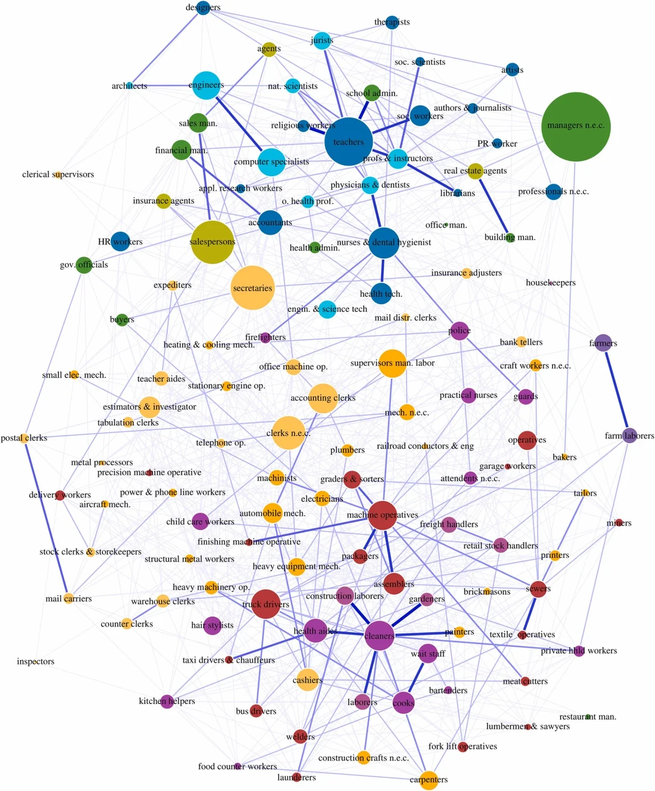
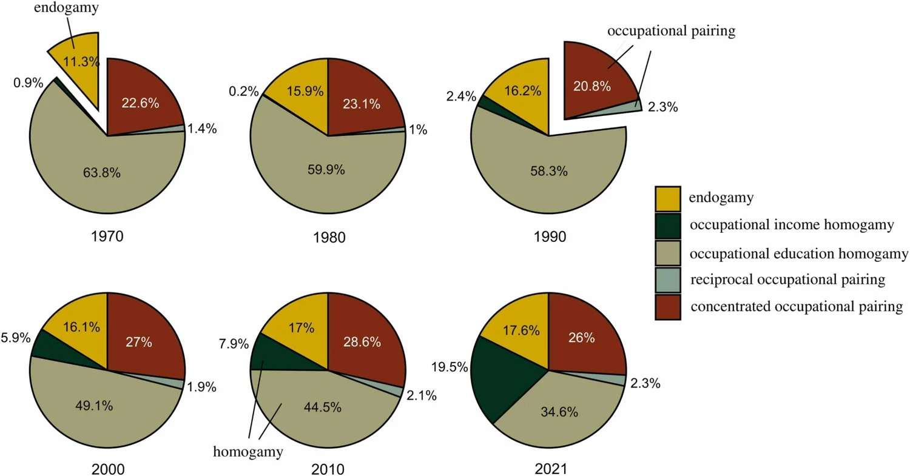
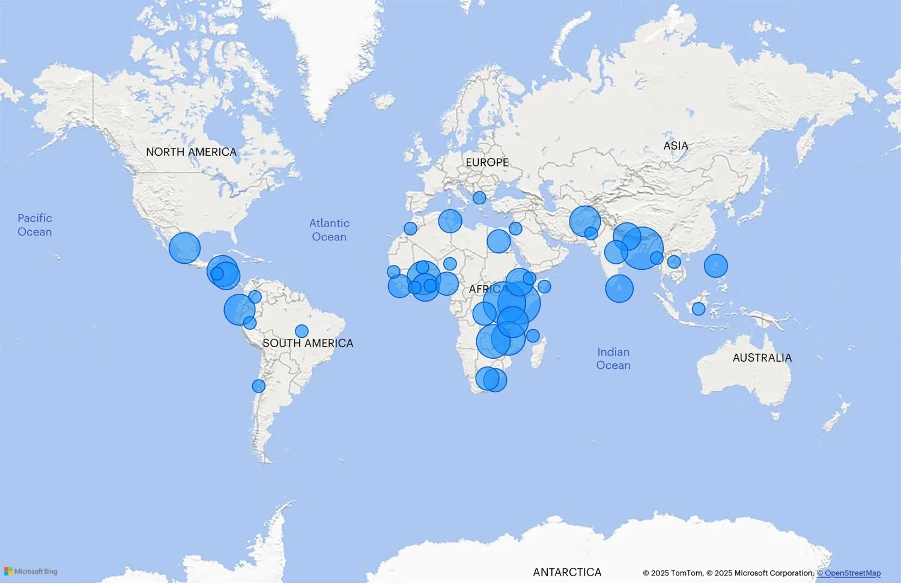
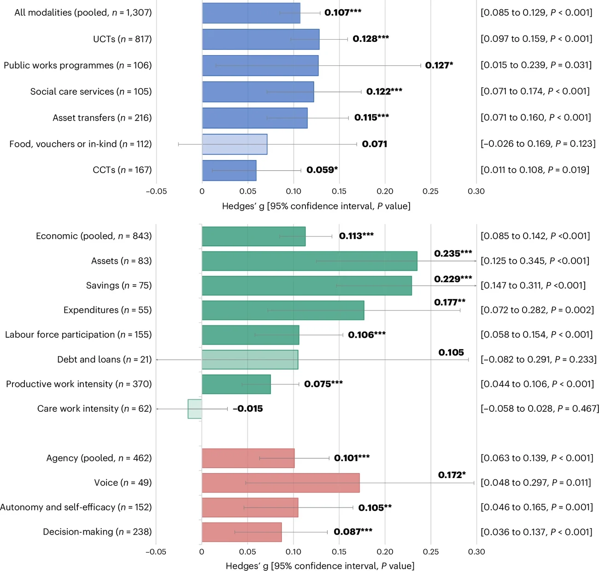

About
Hi, I am Jingying. I am a PhD student in the SNSF research project Labour Markets as Emergent Mobility Networks at the Chair of Prof. Per Block at the University of Zurich, co-supervised by Prof. Christiaan Monden at the University of Oxford. I hold an MSc in Social Research from the University of Edinburgh and a BA in Japanese Language and Literature with a minor in Psychology from Tsinghua University.
My main research interests are social mobility, social stratification in the labour market, and advanced statistical modelling. Using large-scale datasets and social network methods, I study the aggregated structures underlying marriage, mobility and segregation at the level of detailed occupations. Specifically, my dissertation projects address three distinct occupation-oriented questions: how people partner (marriages between occupations), how careers unfold (education-based disparities in mobility between occupations), and how gender segregation evolves (gender alignment in mobility between occupations).
Research
Publications
-
Wang, J., Block, P., 2026.
"The structure of inter-occupational marriages in the United States 1970–2021."
Research in Social Stratification and Mobility, 106, 101203.

Network of inter-occupational marriages. 
Relative importance of predictors in the full model. -
Peterman, A., Wang, J., Kamto Sonke, K. and Steinert, J.I., 2026.
"Social safety nets, women's economic achievements and agency in 45 countries: a systematic review and meta-analysis."
Nature Human Behaviour, 10(4), pp.698–714.

Geographical distribution of overall effect sizes. 
Pooled effects by SSN type (top) and outcome indicator (bottom). - Silima, M., Christofides, N., Franchino-Olsen, H., Woollett, N., Wang, J., Ho-Foster, A., Maleke, K. and Meinck, F., 2024. "Co-occurring intimate partner violence, mental health, human immunodeficiency virus, and parenting among women: a scoping review." Trauma, Violence, & Abuse, 25(5), pp.4102–4116.
Working Papers
-
Wang, J., Block, P. "The Stratification of Occupational Career Lines: A Structural Comparison Between Gender-Education Groups." Under review.
Individuals’ job mobility is structured by cross-occupation pathways in the labor market, called career lines; following these pathways generally results in upward mobility. This study examines which gender-education groups have a higher tendency to follow career lines. Analytically, we conceptualize this by measuring how organized and orderly the mobility of each group is at the aggregate level. Empirically, we apply a model for mobility networks to German register data to compare if and how tertiary education is associated with more organized occupational mobility by gender. We find that the education premium in terms of following career lines is limited to male workers, whereas for women, tertiary education is associated with less organized moves. This is found to be attributable to the limited availability of institutionalized mobility pathways in female-concentrated high-end occupations. Overall, we propose an alternative approach to understand occupational career progression beyond socio-economic aspects by modelling macro-level mobility structure.
-
Dai, Y., Wang, J. "Spousal Occupations in the Twentieth-Century Yangtze Valley." Under review.
Spousal occupations significantly influence a family’s economic condition, social capital, and everyday experience. Changes in spousal occupations form a major aspect of transformation in Chinese families over the twentieth century. This study utilises 175 lineage genealogies with 57,501 couples to examine the spousal occupations in the Yangtze Valley over the twentieth century. We examine the patterns of endogamy, within-sex alignment, and cross-sex alignment, tracking their overtime changes and differences between occupational groups. Endogamy, denoting the tendency of having a same-occupation spouse, fluctuated in a narrow range among the 1881–1950 birth cohorts, then increased substantially for the 1951–1980 cohorts, with the turning point reflecting changes before and after the Reform and Opening-up. Higher degrees of endogamy are likely facilitated by family-based business, common workplace, and shared employment opportunities. Within-sex alignment, denoting the tendency of same-sex individuals of the same occupation having spouses in a limited set of occupations, shows patterns similar to endogamy, but is likely attributable to common living circles, preference shaped by occupations, and familial arrangement of labour. Cross-sex alignment, denoting the tendency of men and women of the same occupation having spouses in a limited set of occupations, was negative for all cohorts, suggesting that even when men and women share the same occupation, they tend to marry spouses from distinctly different occupations. We argue that the lack of cross-sex alignment is related to the different occupational indications and social expectations for men and women. Our study demonstrates that the likely mechanisms behind the formation of spousal occupations have been shaped by changes in economic structure and regimes, marriage institutions, social organisation, and gender norms. These influences operated through both marriage formation and post-marriage labour arrangements.
-
Block, P., Hoffman, M., Keiser, N., Mepham, K., Morellini, M., Wang, J. "Should Mobility Be Modelled with Network Methods? An Empirical Comparison Using Five Types of Mobility." Under review.
Network methods are increasingly popular for analysing various types of mobility, where mobility tables are treated as directed, weighted networks. These approaches challenge the dominant covariate-based understanding of mobility by focusing on endogenous network structures, such as concentration, reciprocation, or clustering. In this spirit, recent extensions to loglinear models have fully integrated statistical network approaches to the study of mobility. Given the novelty and complexity of these methods, we empirically assess the necessity of modelling endogenous structures across five common types of mobility. For each type, we compare the fit of a loglinear model with (i) one network parameter, (ii) one measured covariate, and (iii) one latent covariate. Model fit is assessed by the extent to which the model represents how much individuals from the same origin select the same destination, and corroborated using model likelihoods. We find that the network model consistently fits the data best, suggesting its usefulness for research explaining the destination selection of mobile individuals.
-
Wang, J. "Gender Alignment in Cross-occupation Mobility: A Relational Component of Occupational Gender Segregation."
Men and women change occupations frequently, yet they remain segregated in different occupations over the life course. To address this apparent paradox, this study argues for a relational perspective in understanding occupational gender segregation. Using German administrative employment data from 2012 to 2023 and applying a novel social network approach, it examines occupational mobility among birth cohorts from the 1950s to the 1990s to explain why occupational changes do little to reduce gender segregation. The findings show that beyond gender differences in responses to occupational attributes, workers’ occupational moves align more with those of the same gender than with those of the other gender, a pattern termed gender alignment in this study. Gender alignment is consistently salient among men in all cohorts, whereas women from the 1970s cohort onwards increasingly move into occupations where more men than women move. Removing all gendered mobility patterns would reduce the Dissimilarity Index substantially across cohorts, with relational gender-aligning patterns accounting for up to one-fifth of this reduction and attribute-based patterns for the rest. Together, these results show how occupational moves, although frequent and often crossing gender types, sustain occupational gender segregation over people’s careers.